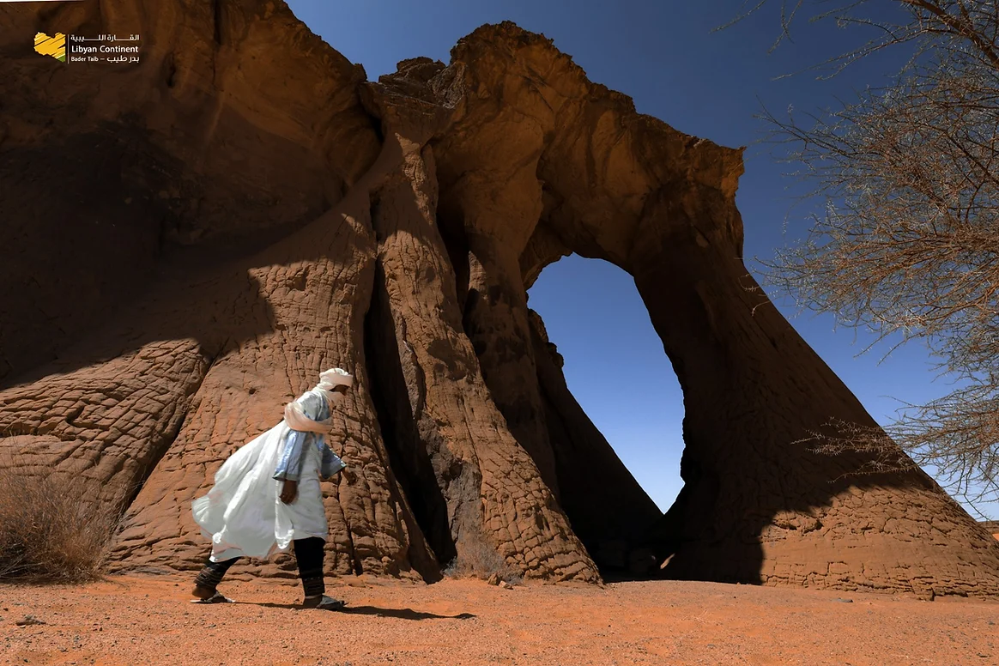

الفروسية الشعبية
عروض احتفالية تعبّر عن المهارة والذاكرة الجماعية وحضور الخيل في المناسبات الشعبية.
الثقافة الليبية ليست مجرد موروث، بل تجربة حيّة تتجلى في الفلكلور، الضيافة، الأزياء التقليدية، الحرف اليدوية، والمائدة الليبية الأصيلة.
يعكس الفلكلور الليبي تنوع المجتمع وثراء موروثه، من الفروسية الشعبية والعروض الاحتفالية إلى الطقوس الاجتماعية والممارسات التقليدية.



عروض احتفالية تعبّر عن المهارة والذاكرة الجماعية وحضور الخيل في المناسبات الشعبية.
مشاهد موسمية ومناسبات اجتماعية تبرز الإيقاع المحلي والأزياء والضيافة.
طقوس يومية وموروث شفهي يربطان الإنسان بالمكان والأسرة والواحة والمدينة.
موروث قابل للتجدد في الأسواق والمهرجانات واللقاءات الثقافية.
قواعد استقبال وتواصل تعكس قيم الكرم والاحترام والاحتفاء بالزائر.
يمثل اللباس التقليدي أحد أبرز عناصر الهوية الثقافية في ليبيا، ويعكس الخصوصية الاجتماعية والجغرافية للمناطق المختلفة.
تعد الصناعات التقليدية في ليبيا جزءًا أصيلًا من التراث الثقافي، وتشمل الفخار، الأدوات اليدوية، الزخارف، والمنتجات التي تعبّر عن روح المكان.

أشكال ومواد محلية تعكس علاقة الناس بالأرض والاحتياج اليومي.
منتجات بسيطة وعملية تحمل ذاكرة المكان وتفاصيل الحياة القديمة.

لغة بصرية محلية تظهر في العمارة والملابس والمقتنيات الشعبية.
يتميز المطبخ الليبي بتنوعه وارتباطه بالبيئة المتوسطية والصحراوية، حيث تجمع أطباقه بين الحبوب واللحوم والخضار والبهارات والنكهات المحلية العميقة.
عجين من دقيق الشعير يقدّم مع المرق واللحم أو البيض والبطاطا.
حبوب سميد تُطهى على البخار وتقدّم مع مرق اللحم أو السمك والخضار.
طبق شعبي يرتبط بالبيت والضيافة والمناسبات الاجتماعية.
أمعاء محشوة بالأرز والتوابل والكبدة أو اللحم.
طبق مكرونة ليبي مع التوابل واللحم أو الدجاج.
حلويات شعبية تقدّم في المناسبات والضيافة.
من إعداد الطعام إلى تقديمه، تعكس الضيافة الليبية قيمة الكرم والاحتفاء بالضيف بوصفها جزءًا من الشخصية الثقافية للمجتمع.
اكتشف التجارب الثقافية